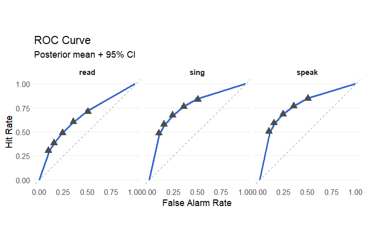
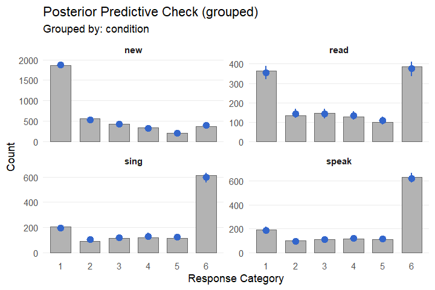
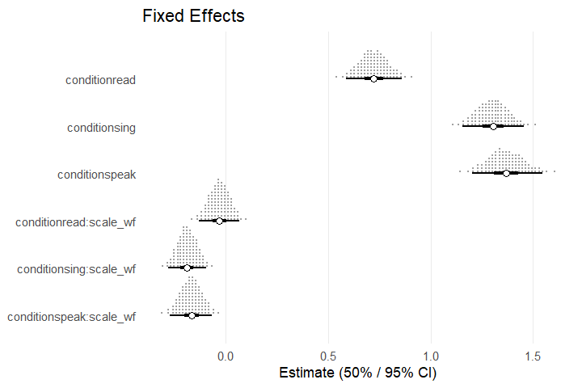
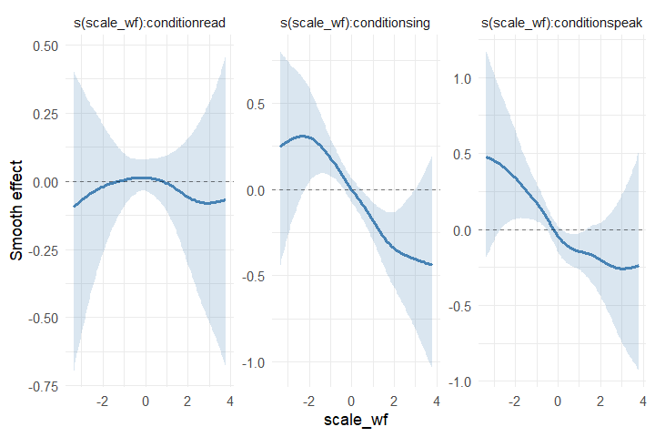

Analyzing univariate recognition data with bayesroc
univariate-recognition.RmdFitting and summarizing a basic model
This tutorial demonstrates how the bayesroc package can
be used to analyze recognition data from a simple cognitive experiment.
Here, we will use the data for Experiment 1B from Whitridge et
al. (2024). This dataset is shipped by the package. We first load the
package and the dataset:
library(bayesroc)
data("whitridge_2024")
str(whitridge_2024)
#> 'data.frame': 7560 obs. of 6 variables:
#> $ participant: int 26 26 26 26 26 26 26 26 26 26 ...
#> $ words : chr "CONGRESS" "BENEFIT" "CRIME" "TREATMENT" ...
#> $ scale_wf : num -1.053 -0.616 0.641 -0.383 -0.373 ...
#> $ condition : Factor w/ 4 levels "new","read","sing",..: 3 1 1 3 1 1 2 4 1 2 ...
#> $ old : int 1 0 0 1 0 0 1 1 0 1 ...
#> $ conf : int 6 3 2 6 3 2 2 5 5 3 ...We have several variables we may want to include in the models we
build: conf contains the confidence ratings on a 6-point
scale, old indicates whether items were targets or lures,
condition indicates how the item was studied (i.e., by
speaking it aloud, singing it, or reading it silently),
scale_wf gives the scaled SUBTLEX word frequency of the
item (Brysbaert & New, 2009), and participant and
words are subject- and item-level indicators. We start with
a basic equal variance model that includes fixed effects for
condition and random effects by subjects and items. We
first specify a formula using the brf() function, which
requires ratings, the old/new indicator, and any predictors we want to
include. The primary formula is constructed with the form
rating | is_old ~ predictors and is applied to
dprime (or mu for cumulative
families). Other model parameters require additional formulas:
f.1 <- brf(
conf | old ~ condition-1 + (condition-1|participant) + (condition-1|words),
criterion ~ 1 + (1|participant) + (1|words),
family = evsd()
)Here, we remove the intercept on dprime for
interpretability. Because the criteria depend only on the lure
distribution and condition only applies to targets, we
specify only intercepts in the criterion formula. We can
then pass the formula and the data to the broc() function
to construct a model:
m.1 <- broc(formula = f.1,
data = whitridge_2024,
encoding_vars = 'condition')
print(m.1)
#> bayesroc model
#> ==============
#> Family: evsd
#>
#> Formula:
#> bayesroc model formula
#> ======================
#>
#> Response: conf
#> Condition variable: old (old/new)
#> Encoding-only variables: condition
#>
#> d' (dprime):
#> Fixed: ~ 0 + condition
#> Random:
#> (0 + condition | participant)
#> (0 + condition | words)
#>
#> Criterion:
#> Fixed: ~ 1 (intercept only)
#> Random:
#> (1 | participant)
#> (1 | words)
#>
#> Data dimensions:
#> N = 7560
#> K = 6
#> P_dprime = 3
#> P_criterion = 1Similar to the above point, the encoding_vars argument
is used to indicate that condition can only apply to
targets, which is a common design within cognitive studies. If we failed
to specify that condition was an encoding variable, the
model would estimate several meaningless parameters (e.g.,
dprime for lures) which also enter the random effects and
contaminate the covariance structure by altering the implied prior.
Thus, encoding_vars should always be used for manipulations
that apply only to targets.
Once we have constructed a model, we can run MCMC sampling using the
fit_broc function. Here, we retain most of the default
settings but use the NumPyro backend for speed:
fit.1 <- fit_broc(
model = m.1,
backend = 'jax',
seed = 999
)
#>
summary(fit.1)
#>
#> bayesroc model summary
#> ======================
#> Family: evsd
#> N: 7560 | K: 6 | Chains: 4 x 2000
#> Sampler: 0 divergent | 0 max-treedepth | min E-BFMI 0.64
#>
#> FIXED EFFECTS
#> -------------
#>
#> DPRIME:
#> parameter estimate sd lower upper rhat ess_bulk ess_tail
#> conditionread 0.724 0.071 0.608 0.842 1.000 5126 6253
#> conditionsing 1.300 0.078 1.174 1.428 1.000 4924 5680
#> conditionspeak 1.365 0.090 1.217 1.511 1.000 5324 6435
#>
#> CRITERION THRESH MID:
#> parameter estimate sd lower upper rhat ess_bulk ess_tail
#> intercept 0.761 0.083 0.627 0.899 1.001 2423 3168
#>
#> CRITERION GAPS:
#> parameter estimate sd lower upper rhat ess_bulk ess_tail
#> log_gap[1,intercept] -1.367 0.121 -1.567 -1.167 1.003 2760 4089
#> log_gap[2,intercept] -1.515 0.150 -1.768 -1.273 1.001 3011 4230
#> log_gap[3,intercept] -1.186 0.094 -1.341 -1.033 1.001 3015 4885
#> log_gap[4,intercept] -1.199 0.157 -1.461 -0.945 1.004 1499 2281
#>
#> POPULATION THRESHOLDS
#> ---------------------
#>
#> intercept:
#> threshold estimate sd lower upper
#> 1 0.149 0.104 -0.059 0.352
#> 2 0.454 0.087 0.281 0.628
#> 3 0.761 0.083 0.597 0.928
#> 4 1.018 0.075 0.869 1.170
#> 5 1.240 0.083 1.081 1.409
#>
#> RANDOM EFFECTS (Standard Deviations)
#> ------------------------------------
#>
#> dprime | participant:
#> level estimate sd lower upper rhat ess_bulk ess_tail
#> conditionread 0.349 0.059 0.259 0.451 1.000 5029 5371
#> conditionsing 0.401 0.061 0.310 0.507 1.000 5706 6013
#> conditionspeak 0.476 0.068 0.374 0.593 1.000 5783 6693
#>
#> dprime | words:
#> level estimate sd lower upper rhat ess_bulk ess_tail
#> conditionread 0.425 0.062 0.322 0.525 1.001 2747 3941
#> conditionsing 0.405 0.059 0.308 0.501 1.001 3383 4888
#> conditionspeak 0.496 0.062 0.393 0.599 1.000 3241 5227
#>
#> criterion | participant:
#> level estimate sd lower upper rhat ess_bulk ess_tail
#> thresh1 0.977 0.116 0.801 1.180 1.000 3288 4860
#> thresh2 0.548 0.073 0.439 0.679 1.001 5085 5998
#> thresh3 0.500 0.060 0.411 0.608 1.000 3985 5511
#> thresh4 0.698 0.089 0.563 0.854 1.000 5132 6204
#> thresh5 0.890 0.125 0.704 1.108 1.000 4907 5383
#>
#> criterion | words:
#> level estimate sd lower upper rhat ess_bulk ess_tail
#> thresh1 0.252 0.061 0.149 0.349 1.002 2425 3087
#> thresh2 0.275 0.047 0.197 0.352 1.000 5852 5851
#> thresh3 0.253 0.027 0.210 0.297 1.002 2145 3661
#> thresh4 0.304 0.059 0.203 0.399 1.003 2896 4843
#> thresh5 0.277 0.060 0.179 0.375 1.000 5644 5612
#>
#> CORRELATIONS
#> ------------
#>
#> dprime | participant:
#> pair estimate sd lower upper rhat ess_bulk ess_tail
#> conditionread ~ conditionsing 0.841 0.101 0.650 0.969 1.003 3161 4155
#> conditionread ~ conditionspeak 0.675 0.142 0.412 0.876 1.002 2384 3285
#> conditionsing ~ conditionspeak 0.854 0.085 0.692 0.963 1.002 3615 5873
#>
#> dprime | words:
#> pair estimate sd lower upper rhat ess_bulk ess_tail
#> conditionread ~ conditionsing 0.549 0.174 0.250 0.824 1.002 1445 1965
#> conditionread ~ conditionspeak 0.457 0.166 0.180 0.726 1.001 1376 1875
#> conditionsing ~ conditionspeak 0.763 0.130 0.529 0.948 1.003 1288 2484
#>
#> criterion | participant:
#> pair estimate sd lower upper rhat ess_bulk ess_tail
#> thresh1 ~ thresh2 0.579 0.121 0.364 0.756 1.001 4165 5588
#> thresh1 ~ thresh3 0.027 0.147 -0.216 0.265 1.002 2543 3877
#> thresh1 ~ thresh4 0.518 0.129 0.286 0.712 1.002 3451 4891
#> thresh1 ~ thresh5 0.564 0.115 0.362 0.735 1.000 4760 5650
#> thresh2 ~ thresh3 0.011 0.160 -0.253 0.278 1.001 2204 4423
#> thresh2 ~ thresh4 0.490 0.141 0.238 0.703 1.001 3275 4422
#> thresh2 ~ thresh5 0.110 0.159 -0.158 0.370 1.000 4637 5690
#> thresh3 ~ thresh4 -0.455 0.132 -0.650 -0.222 1.000 5651 6371
#> thresh3 ~ thresh5 -0.052 0.159 -0.305 0.214 1.000 4572 6077
#> thresh4 ~ thresh5 0.300 0.153 0.034 0.539 1.000 5091 7069
#>
#> criterion | words:
#> pair estimate sd lower upper rhat ess_bulk ess_tail
#> thresh1 ~ thresh2 0.392 0.223 0.010 0.748 1.001 1239 2173
#> thresh1 ~ thresh3 -0.206 0.216 -0.575 0.143 1.004 648 936
#> thresh1 ~ thresh4 0.403 0.238 -0.009 0.784 1.003 1562 3596
#> thresh1 ~ thresh5 0.417 0.238 0.007 0.786 1.001 1812 2819
#> thresh2 ~ thresh3 -0.701 0.147 -0.912 -0.432 1.004 1165 2280
#> thresh2 ~ thresh4 0.510 0.202 0.163 0.821 1.002 1604 3766
#> thresh2 ~ thresh5 0.684 0.172 0.357 0.917 1.001 3799 5583
#> thresh3 ~ thresh4 -0.462 0.168 -0.725 -0.178 1.000 3740 5306
#> thresh3 ~ thresh5 -0.730 0.141 -0.923 -0.461 1.000 5397 6788
#> thresh4 ~ thresh5 0.483 0.224 0.086 0.822 1.000 5329 6117The summary of the fitted model object contains estimates, CIs, and
diagnostics for all parameters. Note that for thresholds, there are K-1
correlated random intercepts per grouping level. To ensure monotonicity,
thresholds are constructed as a midpoint (i.e., threshold 3 for K = 6)
and log-scale offsets. When no continuous covariates are specified,
summary.broc_fit() reconstructs the natural scale
population-level thresholds. If we also want to put the threshold
correlations on a more interpretable scale, we can pass an additional
argument to our summary call:
summary(fit.1,
threshold_natural = TRUE)$threshold_natural
#>
#> criterion | participant:
#> pair estimate sd lower upper
#> thresh1 ~ thresh2 0.877 0.016 0.844 0.906
#> thresh1 ~ thresh3 0.710 0.033 0.643 0.772
#> thresh1 ~ thresh4 0.455 0.058 0.337 0.562
#> thresh1 ~ thresh5 0.235 0.065 0.104 0.359
#> thresh2 ~ thresh3 0.926 0.015 0.893 0.952
#> thresh2 ~ thresh4 0.741 0.038 0.661 0.809
#> thresh2 ~ thresh5 0.591 0.048 0.491 0.680
#> thresh3 ~ thresh4 0.894 0.019 0.852 0.928
#> thresh3 ~ thresh5 0.757 0.033 0.688 0.818
#> thresh4 ~ thresh5 0.909 0.017 0.873 0.938
#>
#> criterion | words:
#> pair estimate sd lower upper
#> thresh1 ~ thresh2 0.974 0.016 0.936 0.996
#> thresh1 ~ thresh3 0.941 0.030 0.872 0.985
#> thresh1 ~ thresh4 0.846 0.062 0.702 0.945
#> thresh1 ~ thresh5 0.731 0.104 0.496 0.898
#> thresh2 ~ thresh3 0.980 0.012 0.950 0.996
#> thresh2 ~ thresh4 0.906 0.044 0.801 0.971
#> thresh2 ~ thresh5 0.810 0.082 0.622 0.938
#> thresh3 ~ thresh4 0.943 0.031 0.864 0.987
#> thresh3 ~ thresh5 0.865 0.068 0.700 0.962
#> thresh4 ~ thresh5 0.963 0.027 0.889 0.994We can also pass the fitted model to other useful functions, such as
plot_roc_curve() or pp_check.broc_fit():
plot_roc_curve(fit.1,
group = 'condition')
pp_check(fit.1,
type = 'bars_grouped',
group = 'condition')
Prior adjustment, model comparison, and smooth terms
To explore other capabilities of the package, we can expand our model by adding a continuous covariate. To do so, we first specify a new formula. Encoding variables can also be specified in the model formula:
f.2 <- brf(
conf | old ~ condition+condition:scale_wf-1 +
(condition+condition:scale_wf-1|participant) +
(condition-1|words),
criterion ~ scale_wf + (scale_wf|participant) + (1|words),
family = evsd(),
encoding_vars = 'condition'
)We probably want to adjust the default priors here. We can view the
default priors and coefficient names for a model before constructing it
by passing the formula and data to get_broc_prior(), and we
can then specify the priors we want to override:
get_broc_prior(f.2,
whitridge_2024)
#> class dpar coef group prior source
#> 1 b dprime conditionread <NA> normal(1, 1) default
#> 2 b dprime conditionsing <NA> normal(1, 1) default
#> 3 b dprime conditionspeak <NA> normal(1, 1) default
#> 4 b dprime conditionread:scale_wf <NA> normal(1, 1) default
#> 5 b dprime conditionsing:scale_wf <NA> normal(1, 1) default
#> 6 b dprime conditionspeak:scale_wf <NA> normal(1, 1) default
#> 7 b thresh_mid (Intercept) <NA> normal(0, 1.5) default
#> 8 b thresh_mid scale_wf <NA> normal(0, 1.5) default
#> 9 b log_gaps gap1_(Intercept) <NA> normal(0, 1) default
#> 10 b log_gaps gap1_scale_wf <NA> normal(0, 1) default
#> 11 b log_gaps gap2_(Intercept) <NA> normal(0, 1) default
#> 12 b log_gaps gap2_scale_wf <NA> normal(0, 1) default
#> 13 b log_gaps gap3_(Intercept) <NA> normal(0, 1) default
#> 14 b log_gaps gap3_scale_wf <NA> normal(0, 1) default
#> 15 b log_gaps gap4_(Intercept) <NA> normal(0, 1) default
#> 16 b log_gaps gap4_scale_wf <NA> normal(0, 1) default
#> 17 sd dprime conditionread participant normal(0, 0.5) default
#> 18 sd dprime conditionsing participant normal(0, 0.5) default
#> 19 sd dprime conditionspeak participant normal(0, 0.5) default
#> 20 sd dprime conditionread:scale_wf participant normal(0, 0.5) default
#> 21 sd dprime conditionsing:scale_wf participant normal(0, 0.5) default
#> 22 sd dprime conditionspeak:scale_wf participant normal(0, 0.5) default
#> 23 sd dprime conditionread words normal(0, 0.5) default
#> 24 sd dprime conditionsing words normal(0, 0.5) default
#> 25 sd dprime conditionspeak words normal(0, 0.5) default
#> 26 sd criterion (Intercept) participant normal(0, 0.5) default
#> 27 sd criterion scale_wf participant normal(0, 0.5) default
#> 28 sd criterion (Intercept) words normal(0, 0.5) default
#> 29 cor dprime <NA> participant lkj_corr_cholesky(1) default
#> 30 cor dprime <NA> words lkj_corr_cholesky(1) default
#> 31 cor criterion <NA> participant lkj_corr_cholesky(1) default
#> 32 cor criterion <NA> words lkj_corr_cholesky(1) default
m.2.priors <- c(
broc_prior('normal(0, 0.5)',
class = 'b',
dpar = 'dprime',
coef = 'conditionread:scale_wf'),
broc_prior('normal(0, 0.5)',
class = 'b',
dpar = 'dprime',
coef = 'conditionsing:scale_wf'),
broc_prior('normal(0, 0.5)',
class = 'b',
dpar = 'dprime',
coef = 'conditionspeak:scale_wf')
)We can then construct the model including our priors and run sampling:
m.2 <- broc(formula = f.2,
priors = m.2.priors,
data = whitridge_2024)
fit.2 <- fit_broc(
model = m.2,
backend = 'jax',
seed = 999
)
#>
summary(fit.2)$fixed
#> $dprime
#> parameter estimate sd lower upper rhat ess_bulk ess_tail
#> 1 conditionread 0.723 0.070 0.609 0.839 1.000 4492 5585
#> 2 conditionsing 1.304 0.077 1.180 1.433 1.000 4670 5467
#> 3 conditionspeak 1.369 0.088 1.227 1.518 1.000 5017 5641
#> 4 conditionread:scale_wf -0.031 0.050 -0.113 0.050 1.000 9344 6580
#> 5 conditionsing:scale_wf -0.188 0.047 -0.265 -0.111 1.001 10630 6711
#> 6 conditionspeak:scale_wf -0.167 0.053 -0.254 -0.082 1.000 9880 6353
#>
#> $criterion_thresh_mid
#> parameter estimate sd lower upper rhat ess_bulk ess_tail
#> 1 intercept 0.764 0.081 0.633 0.898 1.002 2449 3883
#> 2 scale_wf -0.074 0.026 -0.117 -0.031 1.000 12031 6712
#>
#> $criterion_gaps
#> parameter estimate sd lower upper rhat ess_bulk ess_tail
#> 1 log_gap[1,intercept] -1.363 0.116 -1.555 -1.177 1.000 3227 5274
#> 2 log_gap[1,scale_wf] 0.017 0.041 -0.050 0.084 1.001 14523 6318
#> 3 log_gap[2,intercept] -1.511 0.148 -1.759 -1.279 1.000 3005 4488
#> 4 log_gap[2,scale_wf] 0.017 0.046 -0.060 0.091 1.001 14398 6122
#> 5 log_gap[3,intercept] -1.183 0.093 -1.338 -1.034 1.000 3397 5027
#> 6 log_gap[3,scale_wf] 0.090 0.036 0.031 0.148 1.001 13791 6173
#> 7 log_gap[4,intercept] -1.194 0.155 -1.451 -0.943 1.001 1284 2140
#> 8 log_gap[4,scale_wf] 0.076 0.032 0.025 0.129 1.000 13429 6445We can create a quick plot of fixed effects on dprime
using the plot.broc_fit method:
plot(fit.2, type = 'dots')
And we can compare the two models we’ve fit via PSIS-LOO (Vehtari et al., 2017):
loo.1 <- loo(fit.1,
cores = 10)
loo.2 <- loo(fit.2,
cores = 10)
loo_compare(loo.1, loo.2)
#> elpd_diff se_diff
#> model2 0.0 0.0
#> model1 -6.3 6.1The loo.broc_fit() method supports multicore computation
(even for Windows users) via PSOCK clusters. Other functions like
predict.broc_fit() and pp_check.broc_fit(),
among others, also support this. It is highly recommended to use as many
cores as possible when dealing with PSIS-LOO computation or prediction
for large models.
As an exercise, we could also try modeling word frequency as a smooth
term rather than a linear effect. bayesroc interfaces with
the mgcv package (Wood, 2011) to accomplish this. To avoid
creating an extremely heavy model for an example, we only use a simple
population-level smooth term on dprime, but the package
supports any smooth term that can be constructed using the
s() or t2() functions from mgcv
on any parameter.
f.3 <- brf(
conf | old ~ condition-1+s(scale_wf, by = condition) +
(condition-1|participant) + (condition-1|words),
criterion ~ scale_wf + (scale_wf|participant) + (1|words),
family = evsd(),
encoding_vars = 'condition'
)
m.3.priors <- c(
broc_prior('std_normal()', class = 'sds')
)
m.3 <- broc(formula = f.3,
priors = m.3.priors,
data = whitridge_2024)
fit.3 <- fit_broc(
model = m.3,
backend = 'jax',
seed = 999
)
#> We can visualize the conditional smooths from this model and investigate whether the smooth term improved out-of-sample prediction:
plot(conditional_smooths(fit.3))
loo.3 <- loo(fit.3,
cores = 10)
loo_compare(loo.1, loo.2, loo.3)
#> elpd_diff se_diff
#> model3 0.0 0.0
#> model2 -2.1 2.9
#> model1 -8.4 5.5Other signal detection model families
As a final exercise, we return to the original condition-only model
and consider other model families supported by bayesroc. We
can fit the unequal variance signal detection model by changing the
family argument and specifying an additional formula for the
sigma parameter. Given that dprime and
sigma are typically correlated, we introduce
|p| and |w| indicators in the formula to allow
for correlated random effects across parameters:
f.4 <- brf(
conf | old ~ condition-1 + (condition-1|p|participant) + (condition-1|w|words),
sigma ~ condition-1 + (condition-1|p|participant) + (condition-1|w|words),
criterion ~ 1 + (1|participant) + (1|words),
family = uvsd()
)
m.4 <- broc(formula = f.4,
data = whitridge_2024,
encoding_vars = 'condition')
fit.4 <- fit_broc(
model = m.4,
backend = 'jax',
seed = 999
)
#>
summary(fit.4)$fixed
#> $dprime
#> parameter estimate sd lower upper rhat ess_bulk ess_tail
#> 1 conditionread 0.778 0.080 0.647 0.911 1.001 5800 6440
#> 2 conditionsing 1.442 0.094 1.292 1.597 1.000 6009 6644
#> 3 conditionspeak 1.515 0.108 1.339 1.696 1.000 6823 6338
#>
#> $sigma
#> parameter estimate sd lower upper rhat ess_bulk ess_tail scale
#> 1 conditionread 0.175 0.059 0.081 0.274 1.000 7143 6132 (log)
#> 2 conditionsing 0.229 0.055 0.138 0.317 1.000 7762 6678 (log)
#> 3 conditionspeak 0.207 0.056 0.115 0.298 1.001 8306 5278 (log)
#>
#> $criterion_thresh_mid
#> parameter estimate sd lower upper rhat ess_bulk ess_tail
#> 1 intercept 0.79 0.089 0.644 0.935 1.003 2437 3640
#>
#> $criterion_gaps
#> parameter estimate sd lower upper rhat ess_bulk ess_tail
#> 1 log_gap[1,intercept] -1.249 0.120 -1.447 -1.054 1.001 2738 4773
#> 2 log_gap[2,intercept] -1.373 0.153 -1.625 -1.127 1.001 3197 4923
#> 3 log_gap[3,intercept] -1.089 0.097 -1.250 -0.934 1.000 2859 4237
#> 4 log_gap[4,intercept] -1.114 0.155 -1.371 -0.866 1.002 1472 2488As is typical, our estimates of sigma are larger than
one and our estimates of dprime have increased relative to
our initial equal variance model. Fitting other types of signal
detection models follows the same general logic. For example, fitting
the basic equal variance version of the dual process signal detection
model (DPSD; Yonelinas, 1994) can be done by specifying the correct
family and adding a formula for lambda, which represents
the probability of recollection for this family:
f.5 <- brf(
conf | old ~ condition-1 + (condition-1|p|participant) + (condition-1|w|words),
lambda ~ condition-1 + (condition-1|p|participant) + (condition-1|w|words),
criterion ~ 1 + (1|participant) + (1|words),
family = dpsd()
)
m.5 <- broc(formula = f.5,
data = whitridge_2024,
encoding_vars = 'condition')
fit.5 <- fit_broc(
model = m.5,
backend = 'jax',
seed = 999
)
#>
summary(fit.5)$fixed
#> $dprime
#> parameter estimate sd lower upper rhat ess_bulk ess_tail
#> 1 conditionread 0.400 0.060 0.301 0.498 1.000 4217 4781
#> 2 conditionsing 0.983 0.096 0.833 1.145 1.002 1964 4394
#> 3 conditionspeak 0.947 0.102 0.788 1.123 1.001 2618 4761
#>
#> $lambda
#> parameter estimate sd lower upper rhat ess_bulk ess_tail scale
#> 1 conditionread -2.231 0.285 -2.728 -1.794 1 7387 6430 (logit)
#> 2 conditionsing -1.301 0.249 -1.738 -0.923 1 4656 5273 (logit)
#> 3 conditionspeak -1.156 0.258 -1.600 -0.760 1 4645 5356 (logit)
#>
#> $criterion_thresh_mid
#> parameter estimate sd lower upper rhat ess_bulk ess_tail
#> 1 intercept 0.796 0.089 0.653 0.945 1.003 2007 3337
#>
#> $criterion_gaps
#> parameter estimate sd lower upper rhat ess_bulk ess_tail
#> 1 log_gap[1,intercept] -1.174 0.118 -1.368 -0.982 1.002 2143 4398
#> 2 log_gap[2,intercept] -1.150 0.166 -1.425 -0.878 1.000 2749 4581
#> 3 log_gap[3,intercept] -1.068 0.096 -1.228 -0.914 1.002 2501 3811
#> 4 log_gap[4,intercept] -1.125 0.153 -1.383 -0.883 1.002 1260 2325Adding a formula for sigma to f.5 would allow us to fit
the superset DPSD model (Onyper et al., 2010). The
mixture() family again follows the same logic. To fit the
simplified “contamination” mixture model (DeCarlo, 2002), where
unattended target items are fixed at Normal(0, 1), a formula on
lambda is all that is required. For this model,
lambda represents the probability of attending to
targets.
f.6 <- brf(
conf | old ~ condition-1 + (condition-1|p|participant) + (condition-1|w|words),
lambda ~ condition-1 + (condition-1|p|participant) + (condition-1|w|words),
criterion ~ 1 + (1|participant) + (1|words),
family = mixture()
)
m.6 <- broc(formula = f.6,
data = whitridge_2024,
encoding_vars = 'condition')
fit.6 <- fit_broc(
model = m.6,
backend = 'jax',
seed = 999
)
#>
summary(fit.6)$fixed
#> $dprime
#> parameter estimate sd lower upper rhat ess_bulk ess_tail
#> 1 conditionread 1.363 0.198 1.053 1.708 1.002 1542 2750
#> 2 conditionsing 1.771 0.138 1.551 2.002 1.003 2249 3942
#> 3 conditionspeak 1.782 0.147 1.546 2.030 1.001 3329 5595
#>
#> $lambda
#> parameter estimate sd lower upper rhat ess_bulk ess_tail scale
#> 1 conditionread 0.216 0.360 -0.368 0.812 1.002 1819 3722 (logit)
#> 2 conditionsing 1.510 0.304 1.049 2.034 1.002 3479 5641 (logit)
#> 3 conditionspeak 1.773 0.359 1.239 2.404 1.001 3560 5940 (logit)
#>
#> $criterion_thresh_mid
#> parameter estimate sd lower upper rhat ess_bulk ess_tail
#> 1 intercept 0.787 0.091 0.637 0.934 1.003 2016 3525
#>
#> $criterion_gaps
#> parameter estimate sd lower upper rhat ess_bulk ess_tail
#> 1 log_gap[1,intercept] -1.227 0.121 -1.427 -1.029 1.001 2499 4053
#> 2 log_gap[2,intercept] -1.362 0.151 -1.616 -1.120 1.000 2751 4547
#> 3 log_gap[3,intercept] -1.071 0.098 -1.235 -0.914 1.001 2499 3960
#> 4 log_gap[4,intercept] -1.106 0.155 -1.370 -0.858 1.002 1376 2553The mixture family is flexible. Although this variant assumes that
unattended targets are treated like lures, specifying a formula for
dprime2 allows the mean of the unattended distribution to
vary. This can be combined with formulas on sigma and
sigma2 for unequal variance mixture models, and with
dprime_L, lambda_L, and sigma_L
to allow the lure distribution to be a mixture of no-signal and higher
signal items.
References
Brysbaert, M., & New, B. (2009). Moving beyond Kučera and Francis: A critical evaluation of current word frequency norms and the introduction of a new and improved word frequency measure for American English. Behavior Research Methods, 41, 977–990. https://doi.org/10.3758/BRM.41.4.977
DeCarlo, L. T. (2002). Signal detection theory with finite mixture distributions: Theoretical developments with applications to recognition memory. Psychological Review, 109(4), 710–721. https://doi.org/10.1037/0033-295X.109.4.710
Onyper, S. V., Zhang, Y. X., & Howard, M. W. (2010). Some-or-none recollection: Evidence from item and source memory. Journal of Experimental Psychology: General, 139(2), 341–364. https://doi.org/10.1037/a0018926
Vehtari, A., Gelman, A., & Gabry, J. (2017). Practical Bayesian model evaluation using leave-one-out cross-validation and WAIC. Statistics and Computing, 27, 1413–1432. https://doi.org/10.1007/s11222-016-9696-4
Whitridge, J. W., Huff, M. J., Ozubko, J. D., Bürkner, P.-C., Lahey, C. D., & Fawcett, J. M. (2024). Singing does not necessarily improve memory more than reading aloud. Experimental Psychology, 71(1), 33–50. https://doi.org/10.1027/1618-3169/a000614
Wood, S. N. (2011). Fast stable restricted maximum likelihood and marginal likelihood estimation of semiparametric generalized linear models. Journal of the Royal Statistical Society: Series B (Statistical Methodology), 73, 3–36. https://doi.org/10.1111/j.1467-9868.2010.00749.x
Yonelinas, A. P. (1994). Receiver-operating characteristics in recognition memory: Evidence for a dual-process model. Journal of Experimental Psychology: Learning, Memory, and Cognition, 20(6), 1341–1354. https://doi.org/10.1037/0278-7393.20.6.1341